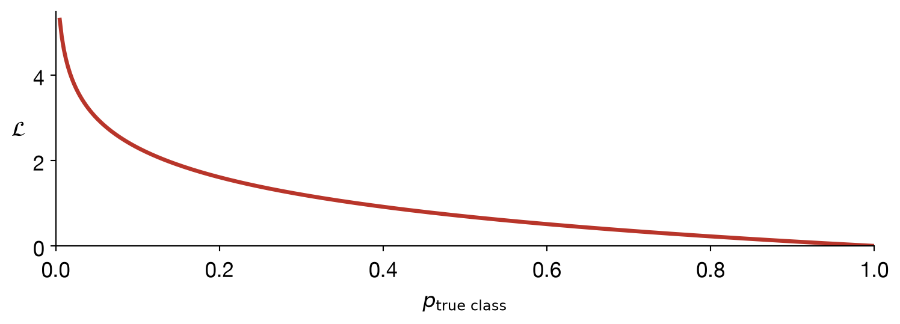

Lecture 6
SPC5004: Tools and Applications of Generative AI
Prof. Anthony E. Phillips
Friday, 9 October 2026
Training a transformer from scratch needs huge amounts of data and compute. Instead, we usually start from a model someone else already pretrained, and adapt it to our own, smaller, labelled task.
Qwen, BERT).A pretrained encoder produces a representation per token (or per sequence), not a class label. We attach a small, task-specific classification head on top — one or two linear layers — and train that (and optionally the rest of the model) on labelled examples.
Everything below the head was pretrained; the head itself starts from random weights and has everything to learn.
The head reads only the output at the first token, [CLS], which serves as a summary of the whole sequence.
DistilBertForSequenceClassification(
(distilbert): DistilBertModel(
(embeddings): Embeddings(
(word_embeddings): Embedding(30522, 768, padding_idx=0)
(position_embeddings): Embedding(512, 768)
(LayerNorm): LayerNorm((768,), eps=1e-12, elementwise_affine=True, bias=True)
(dropout): Dropout(p=0.1, inplace=False)
)
(transformer): Transformer(
(layer): ModuleList(
(0-5): 6 x TransformerBlock(
(attention): DistilBertSelfAttention(
(q_lin): Linear(in_features=768, out_features=768, bias=True)
(k_lin): Linear(in_features=768, out_features=768, bias=True)
(v_lin): Linear(in_features=768, out_features=768, bias=True)
(out_lin): Linear(in_features=768, out_features=768, bias=True)
(dropout): Dropout(p=0.1, inplace=False)
)
(sa_layer_norm): LayerNorm((768,), eps=1e-12, elementwise_affine=True, bias=True)
(ffn): FFN(
(dropout): Dropout(p=0.1, inplace=False)
(lin1): Linear(in_features=768, out_features=3072, bias=True)
(lin2): Linear(in_features=3072, out_features=768, bias=True)
(activation): GELUActivation()
)
(output_layer_norm): LayerNorm((768,), eps=1e-12, elementwise_affine=True, bias=True)
)
)
)
)
(pre_classifier): Linear(in_features=768, out_features=768, bias=True)
(classifier): Linear(in_features=768, out_features=2, bias=True)
(dropout): Dropout(p=0.2, inplace=False)
)| Part | Parameters | Share |
|---|---|---|
| Embeddings (token + position) | 23,835,648 | 35.6% |
| Attention (\(W_Q, W_K, W_V\), output), 6 layers | 14,174,208 | 21.2% |
| Feed-forward, 6 layers | 28,334,592 | 42.3% |
| Layer norms | 18,432 | <0.1% |
| Classification head | 592,130 | 0.9% |
| Total | 66,955,010 |
The new head is under 1% of the model. But by default every parameter has requires_grad=True, so fine-tuning updates all 67 million of them, not just the head.
Classification heads are trained with cross-entropy loss, which compares the predicted probability distribution (from softmax, as before) against the one-hot true label.
\[\mathcal{L} = -\log p_{\text{true class}}\]

Mixing these up — e.g. tuning based on test performance — lets information leak from data you’re supposed to be held out on, and makes your reported numbers optimistic.
Accuracy alone can be misleading, especially with imbalanced classes. A confusion matrix breaks predictions down by what was predicted vs. what was true:
| Predicted positive | Predicted negative | |
|---|---|---|
| Actual positive | TP | FN |
| Actual negative | FP | TN |
(0.5, 0.5): arithmetic 0.50, harmonic 0.50
(0.9, 0.1): arithmetic 0.50, harmonic 0.18F1 is the harmonic mean of precision and recall. A classifier that is excellent on one and poor on the other gets no credit for the average: the smaller number dominates.
A batch needs every sequence to be the same length, but real sequences vary. We pad the short ones out with a [PAD] token.
{'input_ids': [[101, 1037, 2460, 2028, 102, 0, 0, 0], [101, 1037, 2738, 2936, 6251, 2084, 2008, 102]], 'token_type_ids': [[0, 0, 0, 0, 0, 0, 0, 0], [0, 0, 0, 0, 0, 0, 0, 0]], 'attention_mask': [[1, 1, 1, 1, 1, 0, 0, 0], [1, 1, 1, 1, 1, 1, 1, 1]]}Notice the attention_mask: 1 for real tokens, 0 for padding. This tells the model to ignore the padding entirely, so it doesn’t contaminate the attention computation or the loss.
Even with frontier LLMs, a fine-tuned model of this size is often the right tool: fast, cheap enough to run over billions of items, runnable locally on private data, and it outputs a score rather than free text.